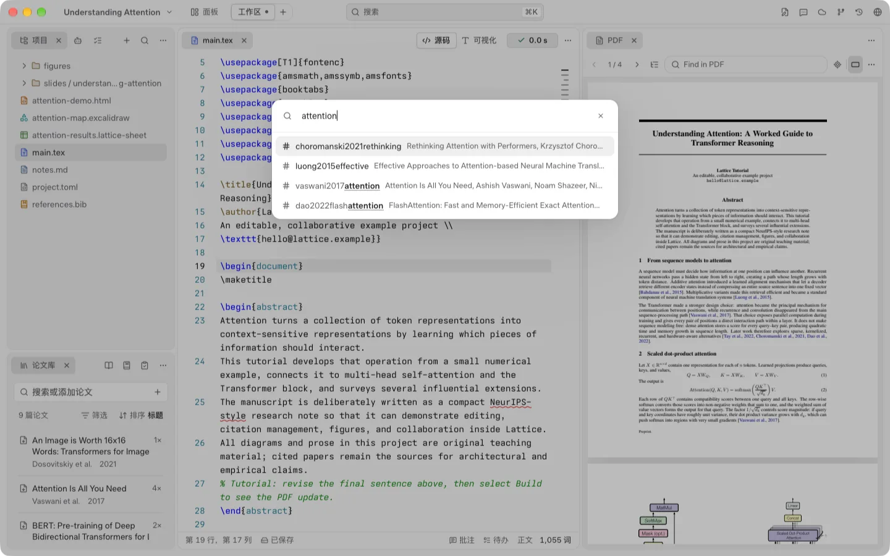
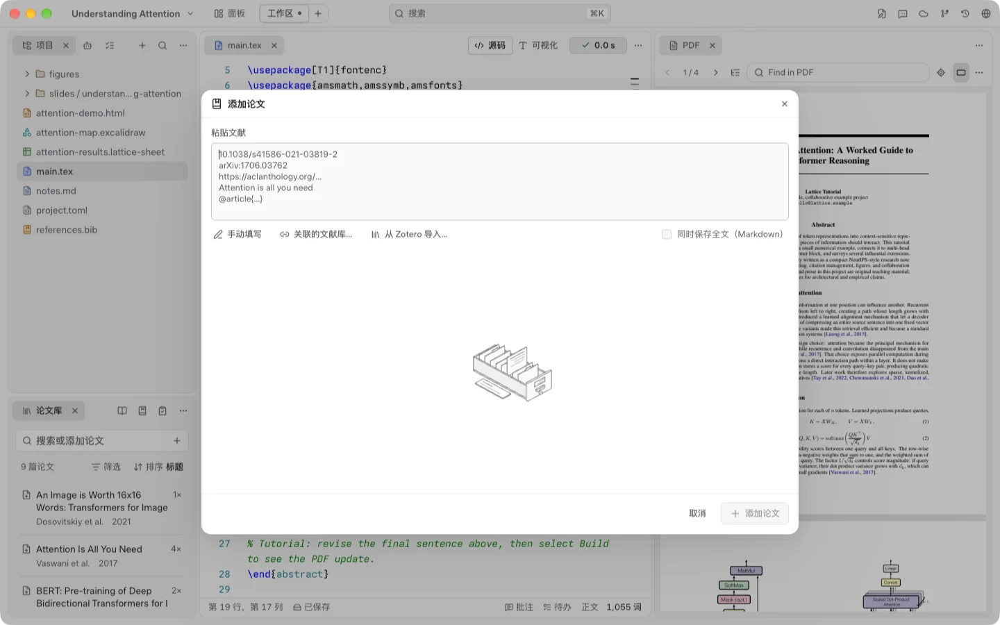

引用与论文库
边写边引用
⌘⇧K插入引用：按 key、标题或作者搜索参考文献，回车后在光标处插入\cite{key}。⌘⇧L引用编号：搜索项目中的 label（eq:、fig:、tab:等），插入\ref{…}。- 鼠标悬停在
\cite的 key 上，或把光标放在上面按⌘⌥K，可以看到它指向的文献。

论文库
论文库 面板（⌘⌥2）列出这个项目引用的论文，以及每篇被引用的次数。可以在草稿旁边打开阅读，或者拖进编辑器来引用。筛选论文 缩小列表范围，排序与分组 决定列表的顺序和分组方式。
添加论文：点 搜索或添加论文 框里的 +（或面板工具栏里的添加论文按钮），也可以直接粘贴到这个框里。手头的任何信息都可以：DOI、arXiv ID、链接、标题或整段 BibTeX，每行一条。再点 添加论文（找到之后按钮会变成「添加 3 篇论文」这样的字样）。Lattice 会逐条查找并写进你的 .bib 文件。

同一个面板里的其他方式：
- 手动填写：自己填写各个字段。
- 关联的文献库…：关联从 Zotero、Paperpile 等工具导出的
.bib，之后它的改动经你确认后同步进来。 - 从 Zotero 导入…：见 下文。
- 同时保存全文（Markdown）：在项目里保存每篇论文的可读副本。
添加论文 旁边的 找文献 可以从文献来源中搜索要添加的论文。
检查引用
检查引用（论文库面板和命令面板中都有）把每条参考文献与正式发表的记录核对（先查 Semantic Scholar，查不到的再查其他来源）。选择 检查全部，或者勾选几条后选 检查所选。报告按需要你做的事分组：可以直接应用的修正、需要你确认的候选、没能完成的检查，以及已经核对无误的条目。应用 把一条修正写进 .bib；全部应用 采纳所有只是补全或更新为正式发表版本的修正，有争议的值留给你决定。报告会保存下来，下次打开还在。
Zotero
无需在 Zotero 里做任何设置，Zotero 开着或关着都可以。
- 在 添加论文 中选择 从 Zotero 导入…。
- 打开 我的文库 或某个分类；打开 包含子分类 可以看到下面的全部论文。
- 勾选需要的论文，或者 全选，再点 添加 N 篇论文。已经在库里的论文显示 已在论文库；仍然可以勾选它来补上缺少的部分，按钮会变成添加 PDF、添加批注或两者都添加。
你在 Zotero 里对论文 PDF 做的批注会一起带进它的笔记（notes/<key>.md），每条都链接到对应页。Lattice 只读取 Zotero，从不写回。如果 Lattice 找不到你的文库，用 选择 Zotero 文件夹… 指定位置。更多内容（包括把 Zotero 接入 AI 助手）见 Zotero, Heptabase and the Agent panel（英文）。